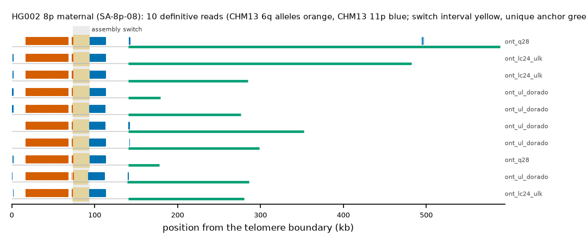

HG002 8p maternal: SA-8p-08
Claim HG002#2#chr8_MATERNAL#L. All claims
- cohort
- HG002 Q100
- individual
- HG002
- haplotype
- maternal
- arm
- 8p
- allele
- SA-8p-08 (foreign)
- model
- donor CHM13 6q, proximal CHM13 11p, recipient CHM13 8p, pattern DP
- claimed end(s)
HG002#2#chr8_MATERNAL#L- assembly switch
- 85,573 bp from the telomere boundary; on CHM13 chr11:93822; own-window projection 73500-93700 bp
- v1 verdict
- confirmed (confirmed)
- definitive tier
- definitive (>= 2 datasets)
- reads
- 10 conclusive switch-concordant, 0 discordant, 0 contradicting, 29 consistent; 10 definitive (ont_lc24_ulk,ont_q28,ont_ul_dorado)
- by tier
- definitive:10;consistent:29
- source
- HG002 Q100 v1.1 public read alignments (16 files; 12 independent datasets after molecule de-duplication)

Conclusive and contradicting reads (17)
49 further reads are consistent (switch test passed, but no terminal telomere, anchor or integrity); they are
listed in reads.tsv.gz. Switch: 95% interval in subtelomere coordinates (kb from the
telomere boundary) and projected on CHM13 11p. Each samtools command prints the read's record
from its public file (CRAM: add the CHM13 v2.0 FASTA as -T).
| read | dataset | tier | length | switch (subtelomere, kb) | switch on CHM13 | donor units / purity | proximal units / purity | anchor (CHM13, MAPQ, unique) | own-assembly best end | fetch |
|---|---|---|---|---|---|---|---|---|---|---|
4b6cfebe-eed6-4fc4-a591-b9de087f56f5 | ont_lc24_ulk | definitive | 486,684 | 73.5-93.7 | chr11:84977-105177 | 262 / 0.99 | 97 / 1.00 | chr8:1998-343856, 60, 329.8 kb | HG002#2#chr8_MATERNAL#L (99.4%) ✓ | samtoolssamtools view -F 0x900 -X 'https://human-pangenomics.s3.amazonaws.com/T2T/HG002/assemblies/polishing/HG002/v1.1/mapping/ont_lc24_ulk/hg002v1.1_ont_lc24_ulk.pri.bam' 'https://human-pangenomics.s3.amazonaws.com/T2T/HG002/assemblies/polishing/HG002/v1.1/mapping/ont_lc24_ulk/hg002v1.1_ont_lc24_ulk.pri.bam.bai' 'chr8_MATERNAL:1-117668' | awk -v r='4b6cfebe-eed6-4fc4-a591-b9de087f56f5' '$1==r' |
5583b40c-3ac2-4833-9e71-cad4fe506b2b | ont_lc24_ulk | definitive | 289,610 | 73.5-93.7 | chr11:84947-105147 | 262 / 0.99 | 97 / 1.00 | chr8:1998-146524, 60, 135.2 kb | HG002#2#chr8_MATERNAL#L (99.7%) ✓ | samtoolssamtools view -F 0x900 -X 'https://human-pangenomics.s3.amazonaws.com/T2T/HG002/assemblies/polishing/HG002/v1.1/mapping/ont_lc24_ulk/hg002v1.1_ont_lc24_ulk.pri.bam' 'https://human-pangenomics.s3.amazonaws.com/T2T/HG002/assemblies/polishing/HG002/v1.1/mapping/ont_lc24_ulk/hg002v1.1_ont_lc24_ulk.pri.bam.bai' 'chr8_MATERNAL:1-117668' | awk -v r='5583b40c-3ac2-4833-9e71-cad4fe506b2b' '$1==r' |
f8bf0291-9d21-4f4e-8b00-97c35acdf4b3 | ont_lc24_ulk | definitive | 284,331 | 73.3-93.5 | chr11:84853-105053 | 257 / 1.00 | 98 / 1.00 | chr8:1998-142306, 60, 131.0 kb | HG002#2#chr8_MATERNAL#L (99.5%) ✓ | samtoolssamtools view -F 0x900 -X 'https://human-pangenomics.s3.amazonaws.com/T2T/HG002/assemblies/polishing/HG002/v1.1/mapping/ont_lc24_ulk/hg002v1.1_ont_lc24_ulk.pri.bam' 'https://human-pangenomics.s3.amazonaws.com/T2T/HG002/assemblies/polishing/HG002/v1.1/mapping/ont_lc24_ulk/hg002v1.1_ont_lc24_ulk.pri.bam.bai' 'chr8_MATERNAL:1-117668' | awk -v r='f8bf0291-9d21-4f4e-8b00-97c35acdf4b3' '$1==r' |
a9f04a22-41c4-4aaf-ac22-79fb2b9ac65d | ont_q28 | definitive | 180,096 | 73.5-93.7 | chr11:84903-105103 | 260 / 0.99 | 97 / 1.00 | chr8:1998-39257, 60, 27.9 kb | HG002#2#chr8_MATERNAL#L (99.7%) ✓ | samtoolssamtools view -F 0x900 -X 'https://human-pangenomics.s3.amazonaws.com/T2T/HG002/assemblies/polishing/HG002/v1.1/mapping/ont_epi2me_q28/hg002v1.1_ont_epi2me_q28.pri.bam' 'https://human-pangenomics.s3.amazonaws.com/T2T/HG002/assemblies/polishing/HG002/v1.1/mapping/ont_epi2me_q28/hg002v1.1_ont_epi2me_q28.pri.bam.bai' 'chr8_MATERNAL:1-117668' | awk -v r='a9f04a22-41c4-4aaf-ac22-79fb2b9ac65d' '$1==r' |
5a3b4d18-1d54-48d8-8c9d-63392e735db4 | ont_q28 | definitive | 589,588 | 73.5-93.7 | chr11:84923-105123 | 259 / 1.00 | 107 / 1.00 | chr8:1998-446069, 60, 432.0 kb | HG002#2#chr8_MATERNAL#L (99.8%) ✓ | samtoolssamtools view -F 0x900 -X 'https://human-pangenomics.s3.amazonaws.com/T2T/HG002/assemblies/polishing/HG002/v1.1/mapping/ont_epi2me_q28/hg002v1.1_ont_epi2me_q28.pri.bam' 'https://human-pangenomics.s3.amazonaws.com/T2T/HG002/assemblies/polishing/HG002/v1.1/mapping/ont_epi2me_q28/hg002v1.1_ont_epi2me_q28.pri.bam.bai' 'chr8_MATERNAL:1-117668' | awk -v r='5a3b4d18-1d54-48d8-8c9d-63392e735db4' '$1==r' |
72b06c7b-b941-44b3-9aaf-82559b2af3fe | ont_ul_dorado | definitive | 180,382 | 73.3-93.7 | chr11:84815-105215 | 260 / 0.99 | 97 / 1.00 | chr8:1998-40336, 60, 29.0 kb | HG002#2#chr8_MATERNAL#L (99.3%) ✓ | samtoolssamtools view -F 0x900 -X 'https://human-pangenomics.s3.amazonaws.com/T2T/HG002/assemblies/polishing/HG002/v1.1/mapping/ont_r10_ul_dorado/hg002v1.1_ont_r10_ul_dorado.pri.bam' 'https://human-pangenomics.s3.amazonaws.com/T2T/HG002/assemblies/polishing/HG002/v1.1/mapping/ont_r10_ul_dorado/hg002v1.1_ont_r10_ul_dorado.pri.bam.bai' 'chr8_MATERNAL:1-117668' | awk -v r='72b06c7b-b941-44b3-9aaf-82559b2af3fe' '$1==r' |
23e09f86-21f8-4312-a97c-a34737f29c78 | ont_ul_dorado | definitive | 278,013 | 73.3-93.5 | chr11:84896-105096 | 260 / 0.99 | 97 / 1.00 | chr8:1998-138783, 60, 127.5 kb | HG002#2#chr8_MATERNAL#L (99.0%) ✓ | samtoolssamtools view -F 0x900 -X 'https://human-pangenomics.s3.amazonaws.com/T2T/HG002/assemblies/polishing/HG002/v1.1/mapping/ont_r10_ul_dorado/hg002v1.1_ont_r10_ul_dorado.pri.bam' 'https://human-pangenomics.s3.amazonaws.com/T2T/HG002/assemblies/polishing/HG002/v1.1/mapping/ont_r10_ul_dorado/hg002v1.1_ont_r10_ul_dorado.pri.bam.bai' 'chr8_MATERNAL:1-117668' | awk -v r='23e09f86-21f8-4312-a97c-a34737f29c78' '$1==r' |
819187ec-2ae8-462e-8294-d344791e313a | ont_ul_dorado | definitive | 287,315 | 74.1-92.3 | chr11:86920-105120 | 255 / 1.00 | 100 / 1.00 | chr8:1998-149645, 60, 138.3 kb | HG002#2#chr8_MATERNAL#L (96.9%) ✓ | samtoolssamtools view -F 0x900 -X 'https://human-pangenomics.s3.amazonaws.com/T2T/HG002/assemblies/polishing/HG002/v1.1/mapping/ont_r10_ul_dorado/hg002v1.1_ont_r10_ul_dorado.pri.bam' 'https://human-pangenomics.s3.amazonaws.com/T2T/HG002/assemblies/polishing/HG002/v1.1/mapping/ont_r10_ul_dorado/hg002v1.1_ont_r10_ul_dorado.pri.bam.bai' 'chr8_MATERNAL:1-117668' | awk -v r='819187ec-2ae8-462e-8294-d344791e313a' '$1==r' |
dd644ab6-6e53-4607-91e0-e3cc7bfbbfe6 | ont_ul_dorado | definitive | 352,934 | 73.3-93.5 | chr11:84927-105127 | 257 / 1.00 | 100 / 1.00 | chr8:1998-214577, 60, 200.5 kb | HG002#2#chr8_MATERNAL#L (99.0%) ✓ | samtoolssamtools view -F 0x900 -X 'https://human-pangenomics.s3.amazonaws.com/T2T/HG002/assemblies/polishing/HG002/v1.1/mapping/ont_r10_ul_dorado/hg002v1.1_ont_r10_ul_dorado.pri.bam' 'https://human-pangenomics.s3.amazonaws.com/T2T/HG002/assemblies/polishing/HG002/v1.1/mapping/ont_r10_ul_dorado/hg002v1.1_ont_r10_ul_dorado.pri.bam.bai' 'chr8_MATERNAL:1-117668' | awk -v r='dd644ab6-6e53-4607-91e0-e3cc7bfbbfe6' '$1==r' |
21da6c57-3d5d-43e7-9fc4-743c69dd5c5c | ont_ul_dorado | definitive | 299,293 | 73.3-93.5 | chr11:84842-105042 | 258 / 1.00 | 99 / 1.00 | chr8:1999-160420, 60, 149.1 kb | HG002#2#chr8_MATERNAL#L (99.3%) ✓ | samtoolssamtools view -F 0x900 -X 'https://human-pangenomics.s3.amazonaws.com/T2T/HG002/assemblies/polishing/HG002/v1.1/mapping/ont_r10_ul_dorado/hg002v1.1_ont_r10_ul_dorado.pri.bam' 'https://human-pangenomics.s3.amazonaws.com/T2T/HG002/assemblies/polishing/HG002/v1.1/mapping/ont_r10_ul_dorado/hg002v1.1_ont_r10_ul_dorado.pri.bam.bai' 'chr8_MATERNAL:1-117668' | awk -v r='21da6c57-3d5d-43e7-9fc4-743c69dd5c5c' '$1==r' |
a9f04a22-41c4-4aaf-ac22-79fb2b9ac65d | ont_herro | definitive (not counted: derived) | 180,033 | 73.5-93.7 | chr11:84894-105094 | 260 / 0.99 | 97 / 1.00 | chr8:1998-39255, 60, 27.9 kb | HG002#2#chr8_MATERNAL#L (99.7%) ✓ | samtoolssamtools view -F 0x900 -X 'https://human-pangenomics.s3.amazonaws.com/T2T/HG002/assemblies/polishing/HG002/v1.1/mapping/ont_HERRO_corrected/hg002v1.1_ont_herro_corrected.pri.bam' 'https://human-pangenomics.s3.amazonaws.com/T2T/HG002/assemblies/polishing/HG002/v1.1/mapping/ont_HERRO_corrected/hg002v1.1_ont_herro_corrected.pri.bam.bai' 'chr8_MATERNAL:1-117668' | awk -v r='a9f04a22-41c4-4aaf-ac22-79fb2b9ac65d' '$1==r' |
5a3b4d18-1d54-48d8-8c9d-63392e735db4_2 | ont_herro | definitive (not counted: derived) | 358,830 | 73.5-93.7 | chr11:84894-105094 | 258 / 1.00 | 99 / 1.00 | chr8:1998-220223, 60, 206.2 kb | HG002#2#chr8_MATERNAL#L (100.0%) ✓ | samtoolssamtools view -F 0x900 -X 'https://human-pangenomics.s3.amazonaws.com/T2T/HG002/assemblies/polishing/HG002/v1.1/mapping/ont_HERRO_corrected/hg002v1.1_ont_herro_corrected.pri.bam' 'https://human-pangenomics.s3.amazonaws.com/T2T/HG002/assemblies/polishing/HG002/v1.1/mapping/ont_HERRO_corrected/hg002v1.1_ont_herro_corrected.pri.bam.bai' 'chr8_MATERNAL:1-117668' | awk -v r='5a3b4d18-1d54-48d8-8c9d-63392e735db4_2' '$1==r' |
4b6cfebe-eed6-4fc4-a591-b9de087f56f5 | ont_q28_lc24 | definitive (not counted: duplicate molecule) | 486,684 | 73.5-93.7 | chr11:84977-105177 | 262 / 0.99 | 97 / 1.00 | chr8:1998-343856, 60, 329.8 kb | HG002#2#chr8_MATERNAL#L (99.4%) ✓ | samtoolssamtools view -F 0x900 -X 'https://human-pangenomics.s3.amazonaws.com/T2T/HG002/assemblies/polishing/HG002/v1.1/mapping/ont_q28_lc24/hg002v1.1_ont_q28_lc24.bam' 'https://human-pangenomics.s3.amazonaws.com/T2T/HG002/assemblies/polishing/HG002/v1.1/mapping/ont_q28_lc24/hg002v1.1_ont_q28_lc24.bam.bai' 'chr8_MATERNAL:1-117668' | awk -v r='4b6cfebe-eed6-4fc4-a591-b9de087f56f5' '$1==r' |
5583b40c-3ac2-4833-9e71-cad4fe506b2b | ont_q28_lc24 | definitive (not counted: duplicate molecule) | 289,610 | 73.5-93.7 | chr11:84947-105147 | 262 / 0.99 | 97 / 1.00 | chr8:1998-146524, 60, 135.2 kb | HG002#2#chr8_MATERNAL#L (99.7%) ✓ | samtoolssamtools view -F 0x900 -X 'https://human-pangenomics.s3.amazonaws.com/T2T/HG002/assemblies/polishing/HG002/v1.1/mapping/ont_q28_lc24/hg002v1.1_ont_q28_lc24.bam' 'https://human-pangenomics.s3.amazonaws.com/T2T/HG002/assemblies/polishing/HG002/v1.1/mapping/ont_q28_lc24/hg002v1.1_ont_q28_lc24.bam.bai' 'chr8_MATERNAL:1-117668' | awk -v r='5583b40c-3ac2-4833-9e71-cad4fe506b2b' '$1==r' |
f8bf0291-9d21-4f4e-8b00-97c35acdf4b3 | ont_q28_lc24 | definitive (not counted: duplicate molecule) | 284,331 | 73.3-93.5 | chr11:84853-105053 | 257 / 1.00 | 98 / 1.00 | chr8:1998-142306, 60, 131.0 kb | HG002#2#chr8_MATERNAL#L (99.5%) ✓ | samtoolssamtools view -F 0x900 -X 'https://human-pangenomics.s3.amazonaws.com/T2T/HG002/assemblies/polishing/HG002/v1.1/mapping/ont_q28_lc24/hg002v1.1_ont_q28_lc24.bam' 'https://human-pangenomics.s3.amazonaws.com/T2T/HG002/assemblies/polishing/HG002/v1.1/mapping/ont_q28_lc24/hg002v1.1_ont_q28_lc24.bam.bai' 'chr8_MATERNAL:1-117668' | awk -v r='f8bf0291-9d21-4f4e-8b00-97c35acdf4b3' '$1==r' |
a9f04a22-41c4-4aaf-ac22-79fb2b9ac65d | ont_q28_lc24 | definitive (not counted: duplicate molecule) | 180,096 | 73.5-93.7 | chr11:84903-105103 | 260 / 0.99 | 97 / 1.00 | chr8:1998-39257, 60, 27.9 kb | HG002#2#chr8_MATERNAL#L (99.7%) ✓ | samtoolssamtools view -F 0x900 -X 'https://human-pangenomics.s3.amazonaws.com/T2T/HG002/assemblies/polishing/HG002/v1.1/mapping/ont_q28_lc24/hg002v1.1_ont_q28_lc24.bam' 'https://human-pangenomics.s3.amazonaws.com/T2T/HG002/assemblies/polishing/HG002/v1.1/mapping/ont_q28_lc24/hg002v1.1_ont_q28_lc24.bam.bai' 'chr8_MATERNAL:1-117668' | awk -v r='a9f04a22-41c4-4aaf-ac22-79fb2b9ac65d' '$1==r' |
5a3b4d18-1d54-48d8-8c9d-63392e735db4 | ont_q28_lc24 | definitive (not counted: duplicate molecule) | 589,588 | 73.5-93.7 | chr11:84923-105123 | 259 / 1.00 | 107 / 1.00 | chr8:1998-446069, 60, 432.0 kb | HG002#2#chr8_MATERNAL#L (99.8%) ✓ | samtoolssamtools view -F 0x900 -X 'https://human-pangenomics.s3.amazonaws.com/T2T/HG002/assemblies/polishing/HG002/v1.1/mapping/ont_q28_lc24/hg002v1.1_ont_q28_lc24.bam' 'https://human-pangenomics.s3.amazonaws.com/T2T/HG002/assemblies/polishing/HG002/v1.1/mapping/ont_q28_lc24/hg002v1.1_ont_q28_lc24.bam.bai' 'chr8_MATERNAL:1-117668' | awk -v r='5a3b4d18-1d54-48d8-8c9d-63392e735db4' '$1==r' |
Files
CRAM/BAM on CHM13 v2.0, BAM on the person's own assembly windows and the window FASTA: release asset subtel_read_evidence_v1_HG002_Q100.tar.gz, directory read_evidence_v1/HG002_Q100/HG002_2_chr8_MATERNAL_L/ (downloads).
Re-derive this verdict
git clone https://github.com/jlanej/human-subtelomere-atlas && cd human-subtelomere-atlas
evidence/replicate_claim.sh 'HG002#2#chr8_MATERNAL#L'The script fetches the cited reads from the public source by region and read ID, re-runs the frozen criteria and compares every per-read and claim verdict with this page (details).